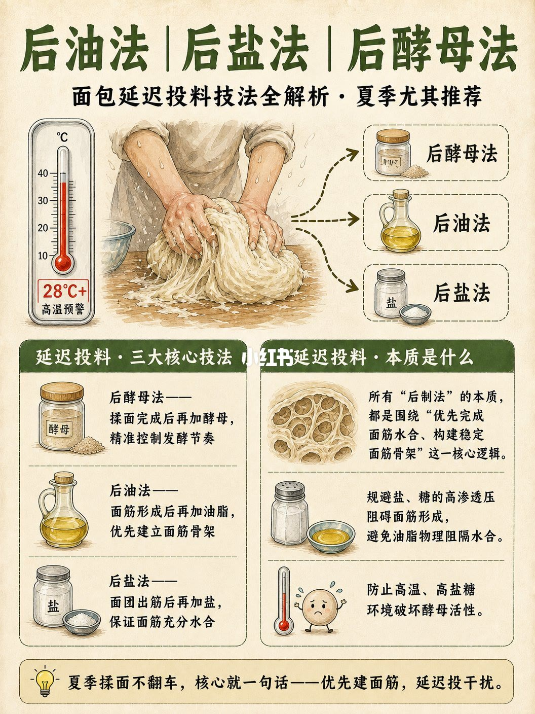
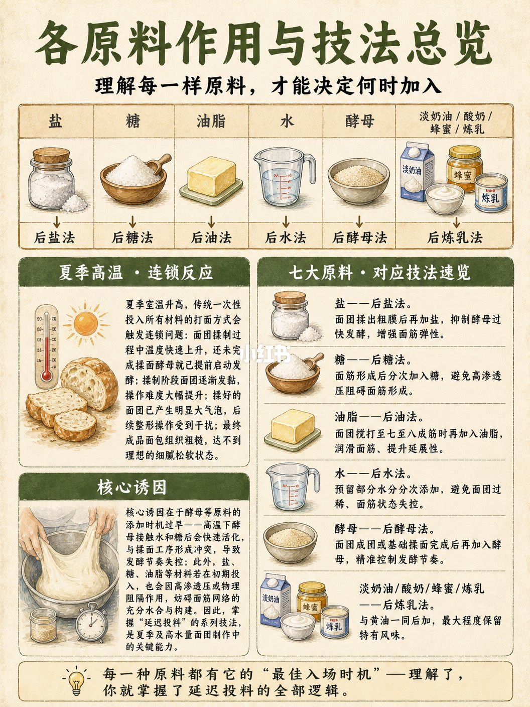
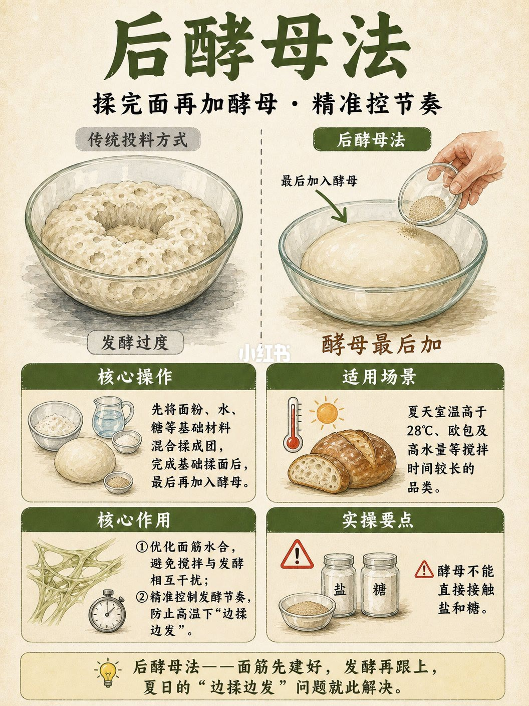
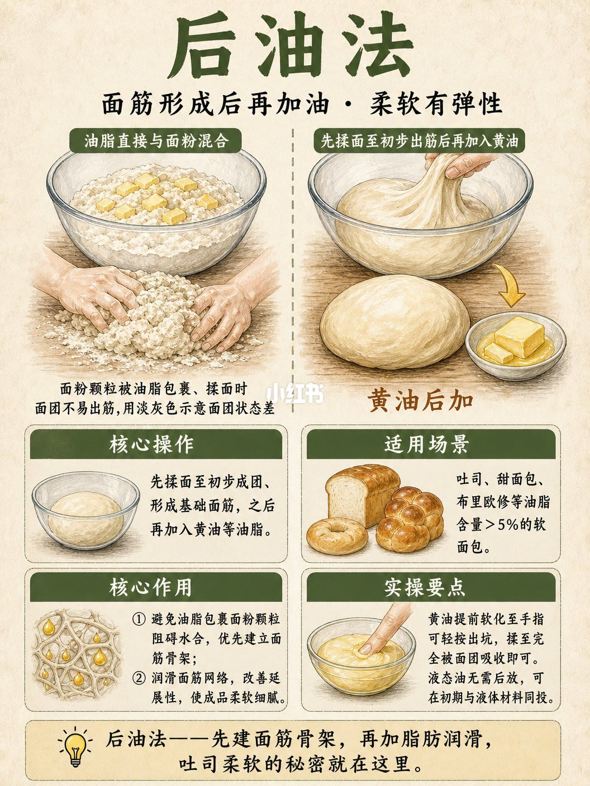
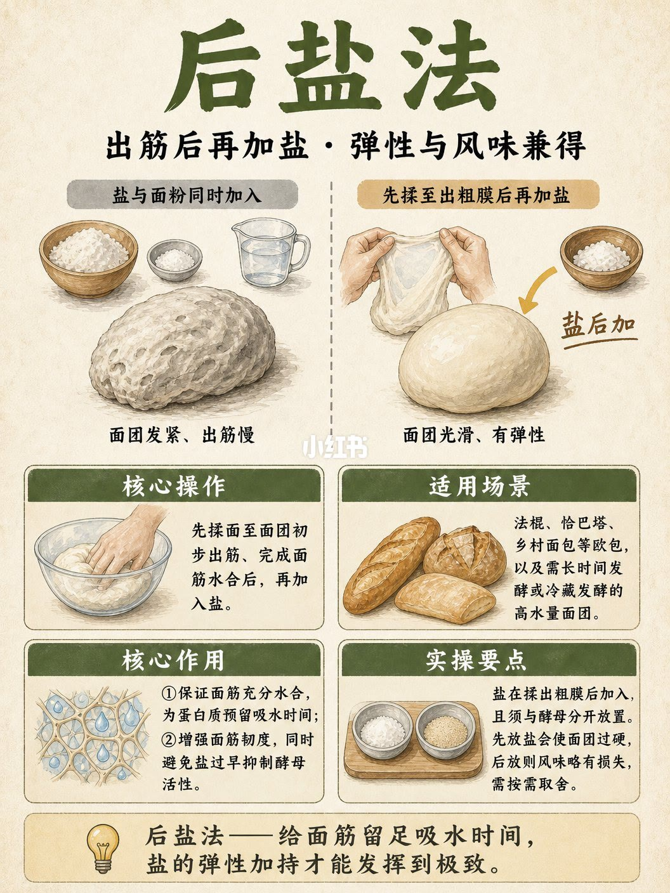
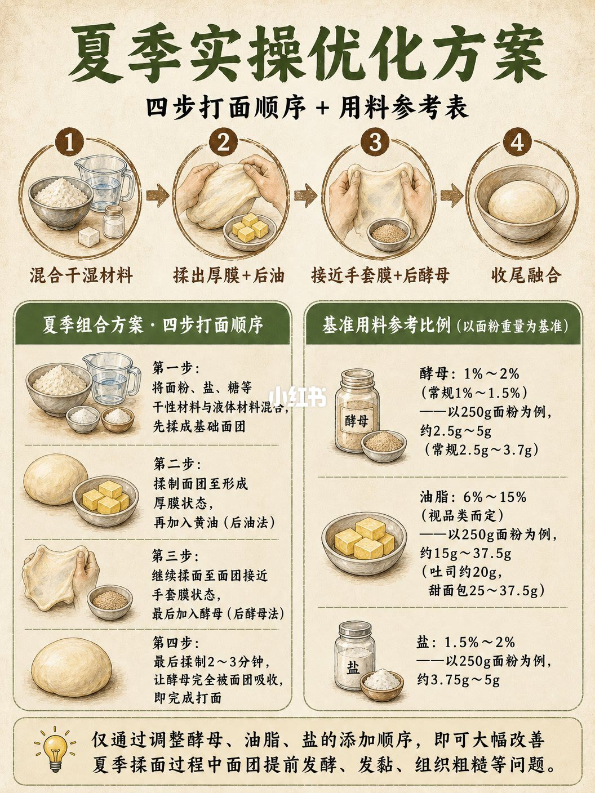

图文实录 · 小红书 · 阿拉灯神丁
后盐、后糖、后酵母法不同顺序到底有啥区别？
区别在推迟的对象不同：后盐推迟盐收紧面筋，后糖推迟糖的高渗透压，后酵母推迟发酵起步，后油推迟油脂包住面粉。标题问的三种里，图上把后糖写成面筋形成后分次加；夏季那套四步实操却把盐和糖放进第一步，只把黄油和酵母往后挪。
1/6
三种后加法共用一句话
标题是「后油法｜后盐法｜后酵母法」，副题写面包延迟投料，夏季尤其推荐。左侧温度计旁有「28°C+ 高温预警」。
后酵母：揉面完成后再加酵母，用来控制发酵节奏。后油：面筋形成后再加油脂，先建面筋骨架。后盐：面团出筋后再加盐，让面筋充分水合。
右栏写所有后制法的本质：优先完成面筋水合，搭出稳定骨架。盐和糖的高渗透压会挡出筋，油脂会从物理上隔开水。高温加上高盐高糖，还会伤酵母活性。页底：夏季揉面不翻车，核心是优先建面筋，把干扰往后放。

2/6
六种原料各有入场时机
页首把盐、糖、油脂、水、酵母，以及淡奶油、酸奶、蜂蜜、炼乳，分别对上后盐、后糖、后油、后水、后酵母、后炼乳。副题：先理解原料，再决定何时加入。温度计是装饰，刻度读数无法当成作者给出的室温，本页没有另写一个具体度数。
夏季一次性把料投完，图上的连锁是：揉的时候温度升得快，面还没揉完酵母已经启动；面团发黏，难操作；揉好后已经有明显大气泡，妨碍整形；成品组织粗糙，达不到细腻松软。诱因写的是酵母碰到水和糖后很快活化，和揉面抢时间；盐、糖、油脂太早加，会靠高渗透压或物理阻隔，妨碍面筋水合。
速览：盐在揉出粗膜后再加，用来压住酵母过快发酵，并增强面筋弹性。糖在面筋形成后分次加，避免高渗透压挡出筋。油脂在搅打到七至八成筋时加，用来润滑、提高延展。水预留一部分分次加，避免面团过稀、筋性失控。酵母在成团或基础揉面完成后再加。淡奶油、酸奶、蜂蜜、炼乳和黄油一起后加，为了留下各自风味。页底：每种原料有自己的入场时机。

3/6
后酵母：基础揉完再下酵母
左图是传统投料，面团标成发酵过度。右图是后酵母，酵母撒在已经揉好的面团上，标注「酵母最后加」。
操作：面粉、水、糖等基础材料先揉成团，基础揉面完成后再加酵母。适用：夏天室温高于 28°C，以及欧包、高水量这类搅拌时间长的品类。作用写了两条：让面筋先水合，搅拌和发酵不要互相抢；把发酵节奏从揉面里拆出去，避免高温下边揉边发。要点：酵母不能直接接触盐和糖。页底：面筋先建好，发酵再跟上。
这一页的起步原料含糖，和第 2 页「面筋形成后再分次加糖」不是同一步。糖的时机以各页自己的句子为准，不把两页合成一个配方。

4/6
后油：先出筋，黄油后加
左边是油脂直接和面粉混合：面粉颗粒被油脂包住，不易出筋，图用淡灰色表示状态差。右边是先揉到初步出筋再加黄油，面团旁写「黄油后加」。
操作：先揉到初步成团、形成基础面筋，再加黄油等油脂。适用：吐司、甜面包、布里欧修等油脂含量大于 5% 的软面包。作用：避免油脂挡住水合，先建骨架；再润滑面筋、改善延展，成品更柔软细腻。要点：黄油事先软到手指能轻轻按出坑，揉到完全吸收。液态油不用后放，可以一开始就和液体一起投。页底把柔软吐司归结为先骨架、后脂肪润滑。
第 2 页的后油时机是「七至八成筋」，这一页是「初步出筋、基础面筋」，第 6 页是「厚膜」。三处用词不同，实录不把它们换成同一个阶段。

5/6
后盐：出粗膜后再加盐
左边盐和面粉同时下，面团发紧、出筋慢。右边先揉到出粗膜再加盐，面团光滑、有弹性，箭头写「盐后加」。
操作：先揉到初步出筋、面筋水合完成，再加盐。适用：法棍、恰巴塔、乡村面包等欧包，以及长时间发酵或冷藏发酵的高水量面团。作用：给蛋白质留吸水时间；盐再增强韧度，同时避免过早抑制酵母。要点：盐在粗膜之后加，并且和酵母分开。先放盐面团会过硬，后放则风味略有损失，要按需要取舍。页底：给面筋留够吸水时间，盐对弹性的加持才用得上。

6/6
夏季四步只把油和酵母挪后
页题是夏季实操优化，四步打面加用料参考。四格依次是：混合干湿材料；揉出厚膜并后油；接近手套膜并后酵母；收尾融合。
第一步：面粉、盐、糖等干料和液体先揉成基础面团。第二步：揉到厚膜，再加黄油，标成后油。第三步：继续揉到接近手套膜，最后加酵母，标成后酵母。第四步：再揉 2 到 3 分钟，让酵母被面团吸收。
用量按面粉重量。酵母 1% 到 2%，常规 1% 到 1.5%；以 250 克面粉为例约 2.5 克到 5 克，常规 2.5 克到 3.7 克。油脂 6% 到 15%，视品类；250 克面粉约 15 克到 37.5 克，吐司约 20 克，甜面包 25 克到 37.5 克。盐 1.5% 到 2%；250 克面粉约 3.75 克到 5 克。页底说只调整酵母、油脂、盐的添加顺序，就能改善夏季提前发酵、发黏、组织粗糙。
这一页和第 5 页、第 2 页，以及笔记说明冲突。说明写后盐是出粗膜后再加，后糖是面筋形成后分次加，并说只调盐、油、酵母的顺序。图上的夏季步骤却把盐和糖放进第一步干料，后移的是黄油和酵母。按「以图为准」：若做的是这一页的夏季组合，盐和糖在揉面开始时就在面团里；若做的是第 5 页的后盐或第 2 页的后糖，不要照这一页的第一步。页底把盐也算进「调整顺序」，但四步正文没有写出盐的后加动作，这一点以四步正文为准。

汇总
先选定要推迟的那一种干扰
结论：后盐、后糖、后酵母不是同一种晚加。后盐晚的是盐，后糖晚的是糖，后酵母晚的是酵母；后油、后水、后炼乳是同一套逻辑里的另外三件。夏季那张四步图只落实了后油和后酵母，盐和糖仍在第一步。
支撑页：第 1 页给出「先建面筋、延迟干扰」和 28°C+。第 2 页列出六种原料的时机，后油写到七至八成筋，后盐写到粗膜。第 3 页把后酵母限定在室温高于 28°C、搅拌时间长的欧包和高水量，并禁止酵母直接碰盐和糖。第 4 页把后油用在油脂大于 5% 的软面包，液态油可以早加。第 5 页把后盐用在欧包和长发酵、冷藏高水量面团，并写明弹性与风味要取舍。第 6 页给出四步和按面粉重量的三组成品用量。
边界：比例是参考，不是某一款面粉的完整配方。第 6 页第一步与第 2、5 页的后盐、后糖不能叠成一套顺序。后油的阶段用词在第 2、4、6 页不一致。温度计装饰刻度不能当成操作温度。说明文字在后油法处被截断，后油细节以第 4 页为准。